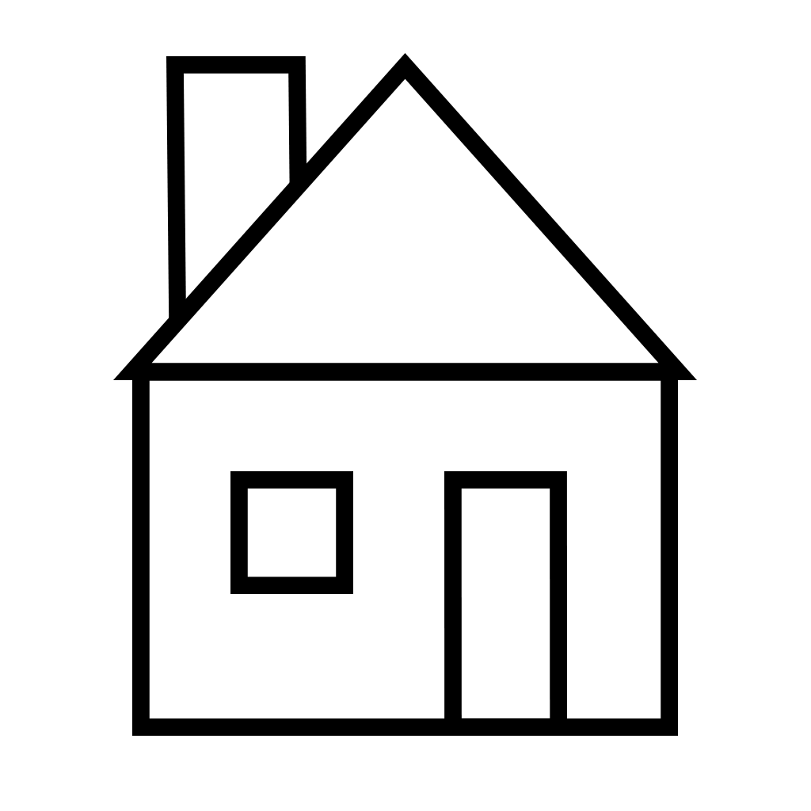
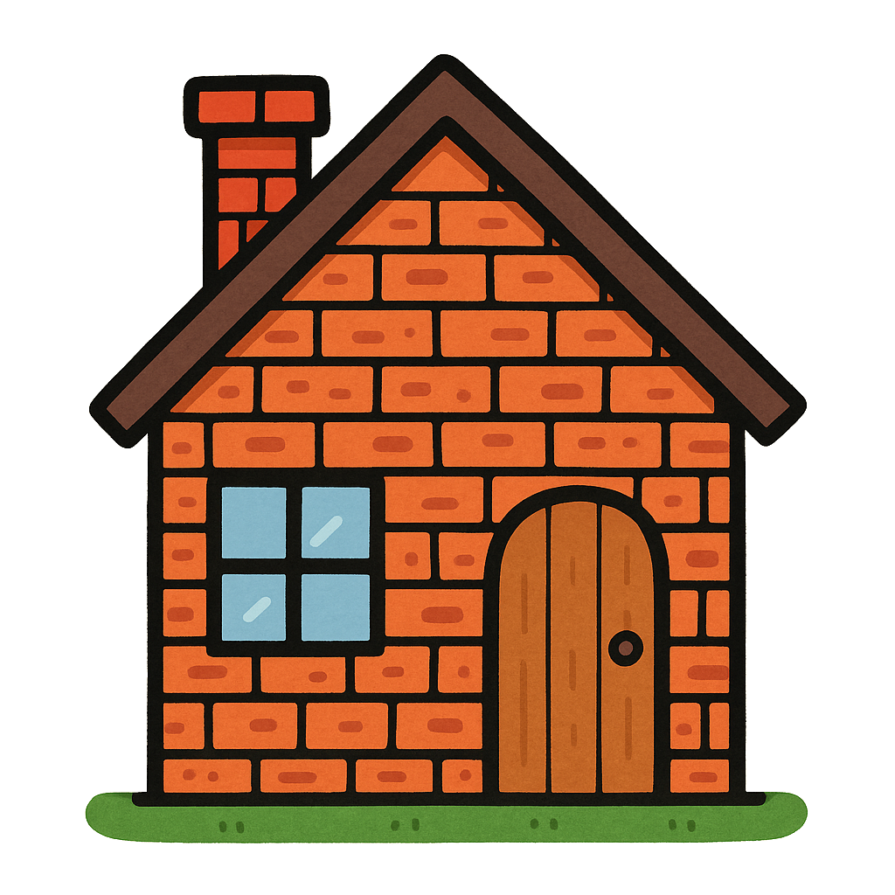

CSS
HTML vs CSS: Séparer la structure de la forme
HTML = la structure
Le HTML définit la structure et le sens des éléments. Ceci est un paragraphe, ceci est une image, ceci est un titre, etc.
HTML
<p>Je suis un paragraphe<⧸p>
CSS = la décoration
Le CSS permet de personnaliser la décoration (couleurs, polices, marges, disposition, etc.), sans modifier le sens des éléments.
CSS
p {
color: red;
}
Merci à ChatGPT pour la génération de cette image
Le langage CSS
CSS (Cascading Style Sheets) est un langage qui contrôle l’apparence des pages web. Depuis son introduction en 1996, CSS a beaucoup évolué. Aujourd’hui, on parle de CSS3, qui regroupe de nombreux modules modernes (flexbox, grid, animations, variables, etc.) largement utilisés par les développeurs web.
Un style est formé de règles appliquées à des éléments HTML.
Exemple minimal de HTML et de CSS
See the Pen c04-css-exemple-simple by Frédéric Lacroix (@frlacroix) on CodePen.
Dans l'exemple ci-dessus, tous les éléments <p> (paragraphes) seront affichés en bleu avec une taille de 20 pixels.
Travail formatif - Modifier la couleur du texte en utilisant le CSS
- Dans le pen ci-haut, appuyer sur l'onglet CSS.
- Modifier la valeur
bluepargreenou parred. - Observer le résultat dans le panneau Result.
Références
Le flux Internet
De la saisie d'une adresse dans votre navigateur jusqu'à la réception du document demandé, voici une description brève des étapes d'une requête effectuée d'un ordinateur client (votre ordinateur) vers un serveur.
Étapes d'une requête effectuée d'un ordinateur client vers un serveur
Côté client |
Côté serveur |
|---|---|
| 1. Saisie d'une adresse www dans le navigateur. | |
| 2. Le navigateur contacte le serveur HTTPS situé à cette adresse. | |
| 3. Le serveur HTTPS reçoit la requête du navigateur. | |
| 4. Le serveur HTTPS recherche le document Web. | |
| 5. Le serveur HTTPS envoie le document Web. | |
| 6. Votre navigateur reçoit le document. | |
| 7. Votre navigateur traite le code source. | |
| 8. Le navigateur affiche la page Web. | |
À quel moment les CSS interviennent-ils ?
C'est à partir de la dernière étape de la liste précédente qu'interviennent les CSS.
- Si le document en contient, ils décrivent au navigateur l'aspect visuel que doit prendre le document HTML.
- Si le navigateur comprend et reconnaît les CSS, il convertit la page en un document que vous pouvez visualiser et avec lequel vous pouvez interagir.
- S'il n'en comprend qu'une partie, il ignore ce qu'il ne peut déchiffrer.
- S'il ne comprend pas du tout les CSS, il affiche une version brute du document HTML.
Rédiger des CSS
La méthode la plus simple pour rédiger les CSS consiste à utiliser un éditeur de texte brut tel que VSC. Les fichiers CSS sont en effet de simples documents texte.
Il existe trois façons d’ajouter du CSS à une page HTML :
- En ligne (inline)
- Interne (balise
<style>) - Externe (fichier .css)
1. En ligne (inline)
Les règles de style en ligne peuvent être rédigées à même le balisage HTML, directement dans l’attribut style d'une balise. La règle s’applique uniquement à cet élément.
Exemple de CSS en ligne:
<p style="color: red;"> ... </p>
Règle générale, cette pratique est à éviter. Mais il existe des situations particulières où les styles en ligne sont pertinents.
See the Pen c04-css-style-en-ligne01 by Frédéric Lacroix (@frlacroix) on CodePen.
2. Interne (balise <style>)
Dans l’en-tête du document HTML (<head>), à l’intérieur d’une balise <style>.
Les règles définies dans <style> s’appliquent à tous les éléments de la page qui correspondent aux sélecteurs.
Exemple de feuille de style interne
<!DOCTYPE html>
<html lang="fr">
<head>
<style>
p {color: red;}
</style>
</head>
<body>
(...)
Dans l'exemple ci-dessus, le navigateur affichera toutes les balises <p> de la page dans la couleur red.
3. Externe (fichier .css)
Dans un fichier séparé, lié à la page par une balise <link>.
C’est la méthode recommandée. Elle permet de réutiliser les styles et de séparer clairement le contenu (HTML) de la présentation (CSS).
Exemple de liaison d'un fichier externe dans un document HTML
<!DOCTYPE html>
<html lang="fr">
<head>
<link rel="stylesheet" href="styles.css">
</head>
<body>
(...)
Exemple de contenu du fichier styles.css
@charset "utf-8";
p {
color: red;
}
Dans l'exemple ci-dessus, toutes les pages liées au fichier styles.css appliqueront les règles de styles qui y sont inscrites.
@charset "utf-8";
Il ne doit y avoir ni caractère, ni commentaire, ni espace avant la déclaration du codage de caractères au début d'une feuille de style externe. Pour plus de détails, consultez les règles du W3C .
La déclaration du codage est utilisée pour assurer l'interprétation correcte de certaines valeurs d'attribut qui peuvent contenir des caractères spéciaux.
Votre lecture se termine ici.
Avant le prochain cours, assurez-vous d’avoir:
- réalisé les travaux formatifs;
- visionné les vidéos;
- expérimenté et sauvegardé les pens dans votre compte Codepen;
- noté les questions qui vous sont venues pendant votre lecture.